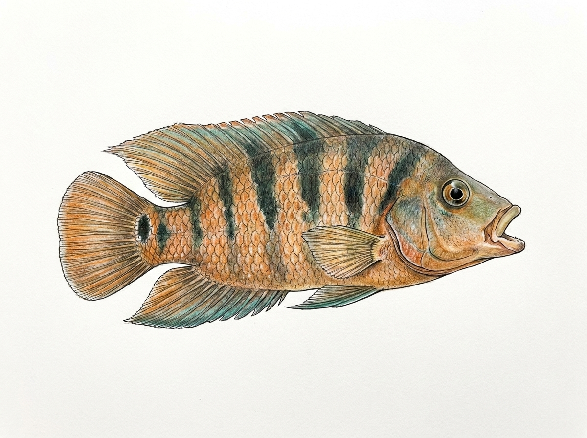

Mayan Cichlid
Mayaheros urophthalmus
Family: Cichlidae
The Mayan Cichlid (Mayaheros urophthalmus), known locally as මායන් සික්ලිඩ් (Mayan Cichlid), is an introduced freshwater cichlid species in Sri Lanka belonging to the family Cichlidae. Native to Central America, it was introduced to Sri Lankan waters, where it has established non-native populations in various lowland river systems, brackish estuaries, and coastal lagoons. Characterized by a robust, deep-bodied shape typical of cichlids, it features a spiny anterior dorsal fin, strong jaws, and a prominent dark ocellus (eyespotted ring) at the base of the caudal fin, alongside five to eight dark vertical bars spanning its greenish-bronze body. Highly adaptable and tolerant of a wide range of salinities and water qualities, this omnivorous and highly territorial fish feeds on small invertebrates, vegetation, algae, and smaller fish, often competing with native aquatic species for food and nesting habitat.